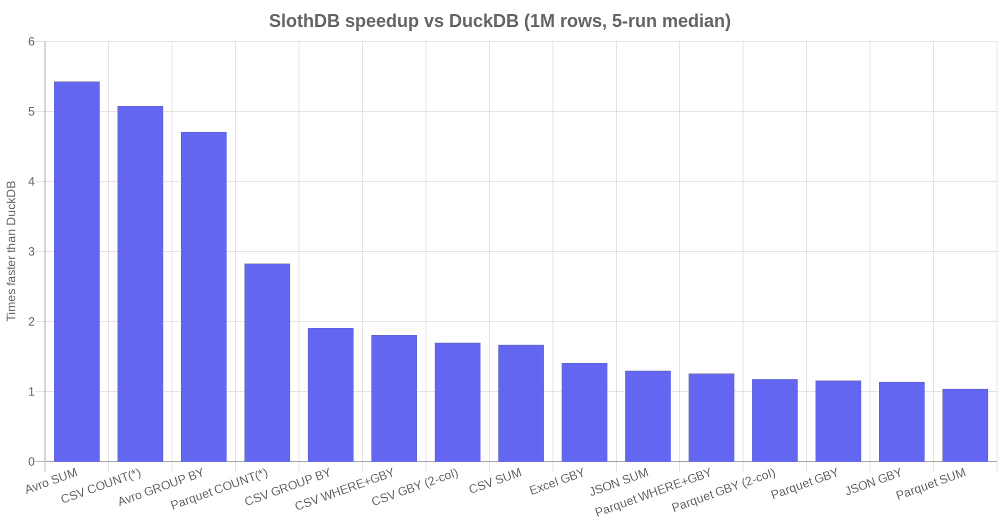

SlothDB is an embedded analytical database in C++20. Point SQL at a CSV, Parquet, JSON, Avro, or Excel file — no server, no import, no extensions. 1.1×–6.6× faster than DuckDB on every benchmark.
pip install slothdb
No extensions to install. No daemon to manage. Just ship the binary.
CSV, Parquet, JSON, Avro, Excel (.xlsx), Arrow IPC, and SQLite — all built in. DuckDB needs extensions for three of those.
2048-value batches, morsel-driven parallelism, zero-copy VARCHAR via shared buffers, fused WHERE + aggregate.
Window functions, QUALIFY, recursive CTEs, MERGE, lateral joins, correlated subqueries, UNION/INTERSECT/EXCEPT.
pip install slothdb returns a pandas DataFrame. The C API is a stable ABI — extensions survive releases.
.slothdb format with atomic checkpoints. RLE, dictionary, and bitpacking compression built in.
Chinese, Japanese, Korean column names work unquoted. The CLI shell has linenoise: arrow keys, history, TAB completion.
15 queries, 5 file formats, 1 million rows, warm cache, 5-run median. SlothDB wins every one.

If another tool wins for your workload, we say so.
| SlothDB | DuckDB | ClickHouse | |
|---|---|---|---|
| Deployment model | Embedded, 8 MB binary | Embedded, ~50 MB binary | Server + Keeper + config |
| 1 M-row benchmarks | 1.04×–6.6× faster on 15/15 | baseline | comparable, w/ cluster hop |
| File formats built in | 7 | 3 (Excel/Avro/SQLite need extensions) | via clickhouse-local |
| Cold start | < 10 ms | < 10 ms | seconds |
| Extension ABI stability | Stable C ABI | Internal C++ API breaks often | N/A |
| GPU offload | CUDA + Metal | CPU only | CPU only |
| Distributed query | No | No | Yes |
| MVCC transactions | No | Yes | Yes |
-- CSV / Parquet / JSON / Excel / Avro — all work the same way SELECT region, SUM(revenue) FROM 'sales.csv' GROUP BY region ORDER BY 2 DESC; -- Parquet with a filter SELECT * FROM read_parquet('events.parquet') WHERE event_date > '2024-01-01'; -- Chinese / Japanese / Korean column names work unquoted CREATE TABLE 销售 (区域 VARCHAR, 销售额 BIGINT); SELECT 区域, SUM(销售额) FROM 销售 GROUP BY 区域;
import slothdb # in-memory, or point at a .slothdb file for persistence db = slothdb.connect() # returns a pandas DataFrame directly df = db.sql(""" SELECT name, department, salary FROM 'employees.parquet' QUALIFY ROW_NUMBER() OVER ( PARTITION BY department ORDER BY salary DESC ) = 1 """).fetchdf()
#include "slothdb/api/slothdb.h" slothdb_database *db; slothdb_connection *conn; slothdb_result *r; slothdb_open("analytics.slothdb", &db); slothdb_connect(db, &conn); slothdb_query(conn, "SELECT region, SUM(revenue) FROM 'sales.csv' GROUP BY region", &r); for (uint64_t i = 0; i < slothdb_row_count(r); i++) printf("%s: %s\n", slothdb_value_varchar(r, i, 0), slothdb_value_varchar(r, i, 1)); slothdb_free_result(r); slothdb_disconnect(conn); slothdb_close(db);
$ slothdb SlothDB Shell v0.1.2 Type .help for help, .quit to exit. slothdb> SELECT * FROM 'data.parquet' LIMIT 5; slothdb> .tables -- list tables slothdb> .schema sales -- describe a table slothdb> .help -- full command list slothdb> .quit # Arrow keys, history, TAB completion, UTF-8 — all via linenoise. # On Windows, cmd.exe handles line editing natively.
MIT licensed. No telemetry. No signup. One binary.